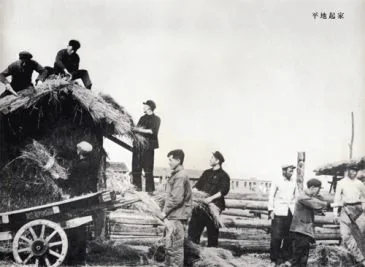

1950年代，支边青年与复转官兵参与建场
1954年农场成立后，来自各地的农机工人、农业技术人员和垦荒者陆续到场。1955年，山东青年志愿垦荒队来到友谊，在十分场九队和六队建立两个青年庄。1958年春，约十万复转官兵陆续奔赴黑龙江垦区。4月，友谊农场迎来三千多名转业官兵。
早期开出耕地要先修路、排水、建住处。有人住进木条夹锯末的简易房，在育苗床上铺几块板当炕。到了开荒工地，就住临时搭起的帐篷，一下大雨，地上的积水能把鞋漂走。田里的开垦和场部、作业站的建设就在这样的条件下同时进行。
1968年起，十八团时期的城市知青
1968年黑龙江生产建设兵团组建，友谊农场编为第三师第十八团，分场和作业队按营、连组织。此后，北京、天津、上海、杭州、哈尔滨、温州等地的城市青年陆续进入友谊的连队。当年先后到友谊的城市知青约有一万五千人。
城市青年入场的主要背景是上山下乡。新到的知青进入已有的农场和连队，同早年到场的工人、支边青年与复转官兵共同劳动。他们在田间、后勤岗位和场办工厂工作，有人在这里生活了十几年或更久，把友谊当成第二故乡。
1970年代后期，恢复农场建制与知青去向
1976年黑龙江生产建设兵团撤销，友谊随后恢复农场建制。到1970年代末，随着知青安置政策变化，北大荒各农场的知青陆续面对返城、求学或继续留场等不同去向。友谊的开垦史也随新一轮机械化试验进入下一阶段。
复转官兵、支边青年和城市知青一起开地、种粮、建场站。像友谊这样的国营农场逐渐连成垦区，北大荒成为国家重要的商品粮基地。“艰苦奋斗、勇于开拓、顾全大局、无私奉献”的北大荒精神，就在几代人共同垦荒的过程中形成。20世纪五六十年代，同在黑龙江的石油工人开发大庆油田，形成了大庆精神。一处为国家增产粮食，一处为国家扩大石油供给。
补充故事 · 垦荒生活片段
垦荒时的春播与文化室
1958年5月，二分场四队一带有田块积水，机器下不了田，垦荒者就用棍子戳孔，再把种子点进去。
一张馆藏照片里，老队长和支边青年围着木桌商量垦荒计划。另一张拍的是马架子里的文化室，报刊挂在墙上。刘焕高回忆，1955年五分场十一队曾把装运农机具的木箱当书柜。


砖厂火灾中的五名建设者
1969年7月16日，友谊农场砖厂发生火灾，五名年轻的建设者在抢救中牺牲。
查阅来源
- 亲历者回忆1955年开荒建场 · 友谊县人民政府
- 垦荒与知青口述 · 黑龙江省政协
- 北大荒精神的历史渊源 · 黑龙江数字方志
- 赓续北大荒精神，推进农业现代化 · 人民网
- 友谊农场建制沿革 · 黑龙江数字方志